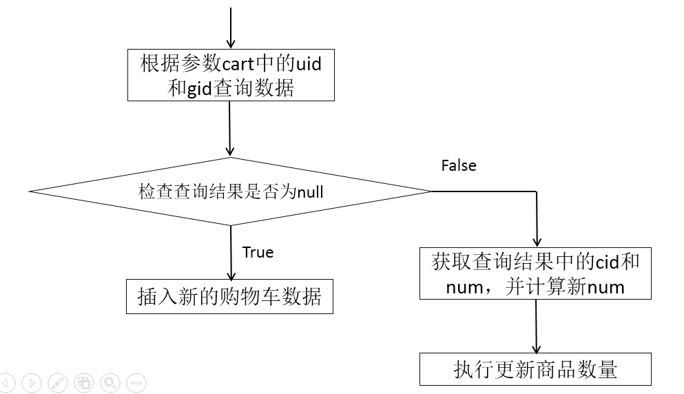

1. 规划SQL语句
查询商品详情的SQL语句大致是：
SELECT title,sell_point,image,price FROM t_goods WHERE id=?
2. 接口与抽象方法
在接口中声明抽象方法：
Goods findById(Long id);
3. 配置映射
在GoodsMapper.xml中配置以上抽象方法的映射：
<!-- 根据商品id查询商品详情 -->
<!-- Goods findById(Long id) -->
<select id="findById"
resultType="cn.tedu.store.entity.Goods">
SELECT
title,
price,image,
sell_point AS sellPoint
FROM
t_goods
WHERE
id=#{id}
</select>
在GoodsMapperTestCase中编写并执行单元测试：
@Test
public void findById() {
Long id = 10000017L;
Goods data = mapper.findById(id);
System.err.println(data);
}
1. 规划异常
无
2. 接口与抽象方法
在IGoodsService接口中，将GoodsMapper中的方法复制粘贴过来，并将方法名中的find改成get：
/**
* 根据商品id查询商品详情
* @param id 商品id
* @return 匹配的商品详情，如果没有匹配的数据，则返回null
*/
Goods getById(Long id);
3. 实现
在GoodsServiceImpl实现类中，将GoodsMapper中的方法复制粘贴过来，添加private权限，并调用持久层对象实现该方法：
/**
* 根据商品id查询商品详情
* @param id 商品id
* @return 匹配的商品详情，如果没有匹配的数据，则返回null
*/
private Goods findById(Long id) {
return goodsMapper.findById(id);
}
在GoodsServiceImpl实现类中，重写IGoodsService接口中定义的抽象方法，并调用自身的私有方法实现：
@Override
public Goods getById(Long id) {
return findById(id);
}
完成后，在GoodsServiceTestCase中编写并执行单元测试：
@Test
public void findById() {
Long id = 10000017L;
Goods data = service.getById(id);
System.err.println(data);
}
1. 处理异常
无
2. 设计请求
请求路径：/goods/{id}/details
请求参数：无
请求类型：GET
响应数据：ResponseResult<Goods>
是否拦截：否，需要在白名单中检查 /goods/**
3. 处理请求
@GetMapping("{id}/details")
public ResponseResult<Goods> getById(
@PathVariable("id") Long id) {
// 调用业务层对象执行查询
// 响应“成功”和查询结果
}
具体实现为：
@GetMapping("{id}/details")
public ResponseResult<Goods> getById(
@PathVariable("id") Long id) {
// 调用业务层对象执行查询
Goods data = goodsService.getById(id);
// 响应“成功”和查询结果
return new ResponseResult<>(SUCCESS, data);
}
完成后，打开浏览器，不登录，直接通过http://localhost:8080/goods/10000017/details进行测试。
首先，应该保证product.html是可以被不登录的情况下直接访问的，也就是需要将/web/product.html添加到拦截器的白名单中！
然后，确保在主页中点击热销排行中的链接时，URL中包含id=xxx。则需要先从FTP下载jquery-getUrlParam.zip文件，解压得到jquery-getUrlParam.js文件，将该文件复制粘贴到项目的static下的js文件夹中，并打开product.html页面，添加引用该文件的代码：
<script type="text/javascript" src="../js/jqueryQgetUrlParam.js"></script>
当添加了引用js文件后，可以检查该函数是否可以正确的获取到值：
<script type="text/javascript">
$(document).ready(function() {
var id = $.getUrlParam("id");
console.log("id=" + id);
});
</script>
创建购物车的数据表：
CREATE TABLE t_cart(
cid INT AUTO_INCREMENT COMMENT '购物车数据的id',
uid INT COMMENT '用户的id',
gid BIGINT COMMENT '商品id',
num INT COMMENT '商品数量',
created_user VARCHAR(20) COMMENT '创建者',
created_time DATETIME COMMENT '创建时间',
modified_user VARCHAR(20) COMMENT '最后修改者',
modified_time DATETIME COMMENT '最后修改时间',
PRIMARY KEY(cid)
) DEFAULT CHARSET=UTF8;
创建cn.tedu.store.entity.Cart实体类，继承自BaseEntity类：
/**
* 购物车数据的实体类
*/
public class Cart extends BaseEntity {
private static final long serialVersionUID = -2692377799099693032L;
private Integer cid;
private Integer uid;
private Long gid;
private Integer num;
// SET/GET
}
1. 分析SQL语句
往购物车表中插入新的数据需要执行SQL语句大致是：
INSERT INTO t_cart (除了cid以外的字段列表) VALUES (值列表)
但是，“加入购物车”并不是每次都在购物车数据表中产生新的数据，如果是反复加入，则后续的每次操作只会增加数量：
UPDATE t_cart SET num=? WHERE cid=?
完整版应该是：
UPDATE t_cart SET num=?,modified_user=?,modified_time=? WHERE cid=?
除此以外，还要能够判断得到“当前应该INSERT还是UPDATE”，其判断标准应该是“该用户原本购物车没有添加该商品，则INSERT，如果已有该商品，则UPDATE”，则“根据用户id和商品id查询购物车数据表即可”：
SELECT cid, num FROM t_cart WHERE uid=? AND gid=?
本次查询根本不需要查询任何字段的值，只需要知道查询结果是否为null即可！但是，如果查询结果非null，表示该用户已经将该商品添加到购物车，需要更新数量，则需要根据用户提交的增量和原有数量计算得到新的商品数量，则需要查询出原有数量，同时，还要查出这条数据的id，以执行以上UPDATE语句。
2. 接口与抽象方法
创建cn.tedu.store.mapper.CartMapper接口，并添加抽象方法：
Integer addnew(Cart cart);
Integer updateNum(Integer cid, Integer num, String modifiedUser, Date modifiedTime);
Cart findByUidAndGid(Integer uid, Long gid);
3. 配置映射
复制得到CartMapper.xml并配置：
<mapper namespace="cn.tedu.store.mapper.CartMapper">
<!-- 增加新的购物车数据 -->
<!-- Integer addnew(Cart cart) -->
<insert id="addnew"
useGeneratedKeys="true"
keyProperty="cid">
INSERT INTO t_cart (
uid,
gid, num,
created_user, created_time,
modified_user, modified_time
) VALUES (
#{uid},
#{gid}, #{num},
#{createdUser}, #{createdTime},
#{modifiedUser}, #{modifiedTime}
)
</insert>
<!-- 更新购物车中商品的数量 -->
<!-- Integer updateNum(
@Param("cid") Integer cid,
@Param("num") Integer num,
@Param("modifiedUser") String modifiedUser,
@Param("modifiedTime") Date modifiedTime) -->
<update id="updateNum">
UPDATE
t_cart
SET
num=#{num},
modified_user=#{modifiedUser},
modified_time=#{modifiedTime}
WHERE
cid=#{cid}
</update>
<!-- 根据用户id和商品id查询购物车数据 -->
<!-- Cart findByUidAndGid(
@Param("uid") Integer uid,
@Param("gid") Long gid) -->
<select id="findByUidAndGid"
resultType="cn.tedu.store.entity.Cart">
SELECT
cid,num
FROM
t_cart
WHERE
uid=#{uid} AND gid=#{gid}
</select>
</mapper>
并编写执行单元测试：
@RunWith(SpringRunner.class)
@SpringBootTest
public class CartMapperTestCase {
@Autowired
CartMapper mapper;
@Test
public void addnew() {
Cart cart = new Cart();
cart.setUid(1);
cart.setGid(2L);
cart.setNum(3);
Integer rows = mapper.addnew(cart);
System.err.println("rows=" + rows);
}
@Test
public void updateNum() {
Integer cid = 1;
Integer num = 50;
String modifiedUser = "系统管理员";
Date modifiedTime = new Date();
Integer rows = mapper.updateNum(cid, num, modifiedUser, modifiedTime);
System.err.println("rows=" + rows);
}
@Test
public void findByUidAndGid() {
Integer uid = 1;
Long gid = 2L;
Cart cart = mapper.findByUidAndGid(uid, gid);
System.err.println(cart);
}
}
1. 规划异常
此次的操作可能是INSERT操作，也可能是UPDATE操作，所以，可能抛出InsertException或UpdateException。
此次的查询并不导致任何错误，无论是否查询到匹配的结果，都是正确的！则不涉及异常！
2. 接口与抽象方法
创建cn.tedu.store.service.ICartService接口，并添加抽象方法：
void addToCart(Cart cart, String username) throws InsertException, UpdateException;
3. 实现
创建cn.tedu.store.service.impl.CartServiceImpl类，实现ICartService接口，在类之前添加@Service注解，在类中添加@Autowired private CartMapper cartMapper;持久层对象。
然后，私有化实现持久层的3个方法。
最后，实现接口中的抽象方法的流程大致为：

规划开发步骤：
public void addToCart(Cart cart, String username) throws InsertException, UpdateException {
// 根据参数cart中的uid和gid执行查询
// 判断查询结果是否为null
// 是：表示当前用户并没有将当前商品添加到购物车，则执行增加
// 否：表示当前用户的购物车中已有该商品，则取出该数据的cid和num
// 根据参数cart中的num和刚才查询结果中取出的num，计算得到新的num
// 执行更新
}
具体实现为：
/**
* 处理购物车数据的业务层实现类
*/
@Service
public class CartServiceImpl implements ICartService {
@Autowired
private CartMapper cartMapper;
@Override
public void addToCart(Cart cart, String username) throws InsertException, UpdateException {
// 根据参数cart中的uid和gid执行查询
Integer uid = cart.getUid();
Long gid = cart.getGid();
Cart result = findByUidAndGid(uid, gid);
Date now = new Date();
// 判断查询结果是否为null
if (result == null) {
// 是：表示当前用户并没有将当前商品添加到购物车，则执行增加
cart.setCreatedUser(username);
cart.setCreatedTime(now);
cart.setModifiedUser(username);
cart.setModifiedTime(now);
addnew(cart);
} else {
// 否：表示当前用户的购物车中已有该商品，则取出该数据的cid和num
Integer cid = result.getCid();
Integer num = result.getNum();
// 根据参数cart中的num和刚才查询结果中取出的num，计算得到新的num
Integer newNum = cart.getNum() + num;
// 执行更新
updateNum(cid, newNum, username, now);
}
}
/**
* 增加新的购物车数据
* @param cart 购物车数据
*/
private void addnew(Cart cart) {
Integer rows = cartMapper.addnew(cart);
if (rows != 1) {
throw new InsertException(
"将商品添加到购物车失败！插入数据时出现未知错误！");
}
}
/**
* 更新购物车中商品的数量
* @param cid 购物车数据的id
* @param num 商品的新数量
* @param modifiedUser 修改执行人
* @param modifiedTime 修改时间
*/
private void updateNum(Integer cid, Integer num,
String modifiedUser, Date modifiedTime) {
Integer rows = cartMapper.updateNum(cid, num, modifiedUser, modifiedTime);
if (rows != 1) {
throw new UpdateException(
"将商品添加到购物车失败！更新数据时出现未知错误！");
}
}
/**
* 根据用户id和商品id查询购物车数据
* @param uid 用户id
* @param gid 商品id
* @return 匹配的购物车数据，如果没有匹配的数据，则返回null
*/
private Cart findByUidAndGid(
Integer uid, Long gid) {
return cartMapper.findByUidAndGid(uid, gid);
}
}
创建CartServiceTestCase测试类，编写并执行单元测试：
@RunWith(SpringRunner.class)
@SpringBootTest
public class CartServiceTestCase {
@Autowired
ICartService service;
@Test
public void addToCart() {
try {
Cart cart = new Cart();
cart.setUid(10);
cart.setGid(20L);
cart.setNum(30);
String username = "Admin";
service.addToCart(cart, username);
System.err.println("OK.");
} catch (ServiceException e) {
System.err.println(e.getClass().getName());
System.err.println(e.getMessage());
}
}
}
1. 处理异常
无
2. 设计请求
请求路径：/carts/add_to_cart
请求参数：Cart cart, HttpSession session
请求类型：POST
响应数据：ResponseResult<Void>
是否拦截：是，无需修改配置
3. 处理请求
创建cn.tedu.store.controller.CartController，继承自BaseController，在类之前添加@RestController和@RequestMapping("carts")注解，并在类中声明@Autowired private ICartService cartService;业务层对象。
然后，添加处理请求的方法：
@RequestMapping("add_to_cart")
public ResponseResult<Void> addToCart(Cart cart, HttpSession session) {
// 获取uid和username
// 将uid封装到参数cart中
// 调用业务层对象执行加入购物车功能
// 响应成功
}
完成后，通过http://localhost:8080/carts/add_to_cart?gid=10000001&num=1进行测试，如果没有登录就执行测试，会被重定向到登录页，登录成功再次测试即可。